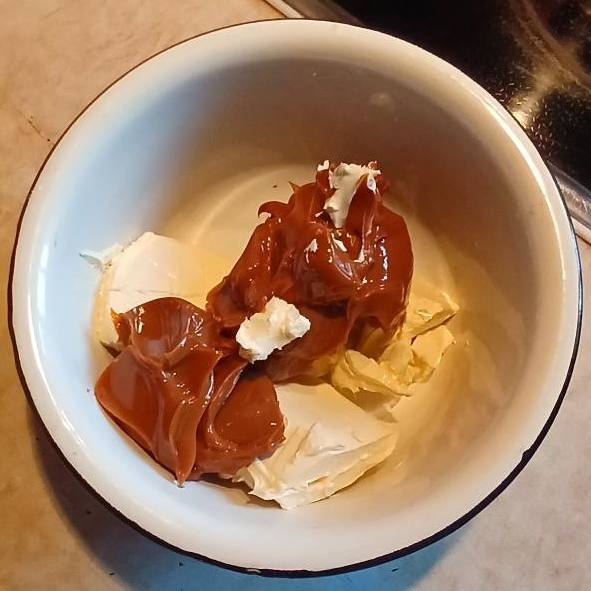
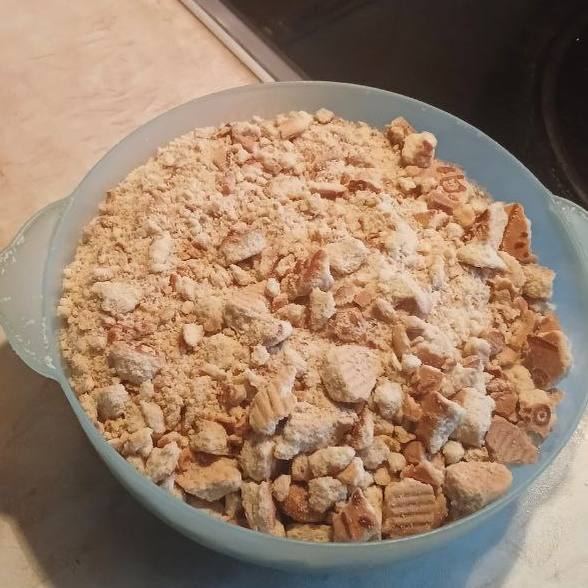
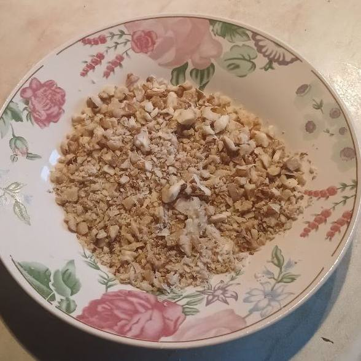
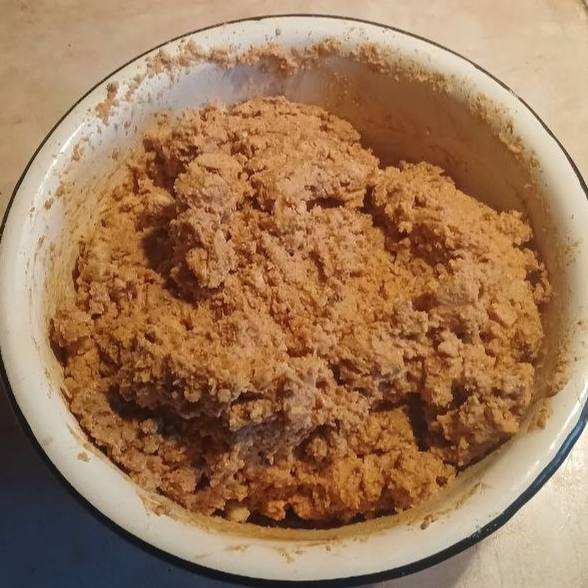
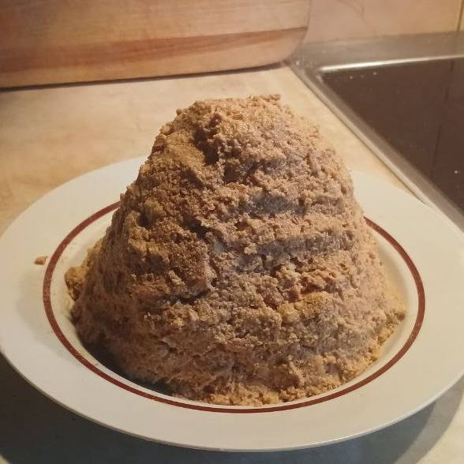
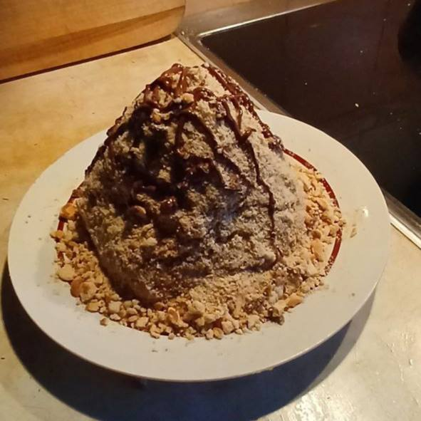

Торт "Муравейник"
Торт "Муравейник" представляет собой слоёный десерт из крошки печенья и заварного крема, имитирующий муравейник. Этот торт часто готовили на праздники и семейные торжества.
Торт "Муравейник" появился в советской кулинарии в середине XX века. Существует несколько версий о происхождении его названия. Одна из них указывает на то, что торт состоит из крошек печенья и сгущенного молока, которые напоминают муравейники своей формой и текстурой. Название также может символизировать домашний уют и тепло.
Рецепт торта «Муравейник»:
- Песочное печенье — 500 г
- Варёное сгущённое молоко — 380 г
- Сливочное масло — 180 г
- Грецкие орехи — 100 г
- Ванильный сахар — 10 г
- Шоколад для украшения — 100 г
- Подготовьте ингредиенты, нарежьте масло и орехи.

- Взбейте масло со сгущёнкой до пышной массы.

- Добавьте орехи и кусочки печенья, аккуратно перемешайте.


- Сформируйте горку-муравейник на тарелке.

- Полейте растопленным шоколадом.

← Назад на главную